Review
Mega desktop app review: a generous free plan and real Linux support, with a few gaps
This Mega desktop app review looks at what the vendor documents: two way sync, a backup mode, a free 20 GB account and official builds for three operating systems. It also lists what Mega does not state in the sources checked.
Free account with 20 GB. Paid plans add storage.
On this page
The Mega desktop app scores 8.0 out of 10 in this review. It pairs a free 20 GB encrypted account with two way sync and backups on Windows, macOS and Linux, and its source code is public. The cautions are that a sync mirrors deletions, paid plans carry a transfer quota, and hardware requirements and refund terms are not stated in the sources read.
This is an independent guide, not Mega's website. Buttons lead to the official Mega site and may be affiliate links; if they are, the price you pay does not change. Facts were checked on 6 November 2026 against Mega's public GitHub repositories and its App Store listing.
Sync: two way, deletions included
The core of this Mega desktop app review is the sync engine, because that is what the app is for. Mega's README describes it plainly: files and subfolders are replicated in both directions, and renames, moves and deletions made on either side are applied to the other.
That model suits people who work on several computers. It also means a sync is not a safety copy. Delete a folder by mistake on a laptop and the deletion reaches the cloud. Mega's app listing does say that previous versions of a file can be restored through file version history, and the command line guide notes that items removed by a sync go to a debris folder first, but neither replaces a real backup.
Backups: a separate tab in Settings
The README describes the app as automated syncing and backup between your computers and the cloud drive, and the 6.5.0 release notes mention reworked Syncs and Backups tabs in the Settings dialog. So backup is a distinct function with its own tab.
The public README does not explain in detail how a desktop backup behaves differently from a sync. The best documented backup behaviour is in Mega's terminal client, which creates dated copies on a schedule and keeps a set number of them. The command line backup guide walks through it.

Platforms
Mega states minimums of Windows 10, Windows Server 2019 and macOS 10.15 Catalina. On Linux it officially supports Debian, Ubuntu, Mint, Fedora and CentOS, and says prebuilt packages exist for other distributions. Version 6.5.0 improved Wayland support, which matters on current Linux desktops.
Three desktop systems with named Linux distributions is wider coverage than many storage services offer. The README gives no processor, memory or disk figures. The download page has the install steps.

Encryption and account security
Mega's own app listing describes the service as zero knowledge encrypted, says the client code is open source and says an account recovery key ensures that only you can access your data. The desktop app's repository on GitHub is public, so the claim about open client code can be checked there.
The practical consequence is that the recovery key is yours to keep safe. The listing also describes share links protected by a password and links with an expiry date, plus encrypted chat and calls, which are part of the service and not of the desktop client.

Release pace
The GitHub release list shows steady work: version lines 6.3, 6.4, 6.5, 6.6 and 6.7 appear between May and late October, with 6.7.0.3 tagged on 26 October 2026. Recent notes cover clearer handling of stalled issues and name conflicts, a reworked File Manager and a screenshot tool.
The notes are brief, and every release ends with an unspecified line about bug fixes and performance improvements. The latest version page summarises each build.

Cost
The free plan includes 20 GB and needs no credit card. Paid plans are named Essential, Pro Lite, Pro I, Pro II and Pro III; Mega's listing gives Pro I as 3 TB of storage with 3 TB of transfer. The transfer figure is a quota, so heavy downloading and sharing count against it. Details and the limits of what could be confirmed are on the pricing page.
If a transfer quota or the two way model does not suit you, the alternatives page lists six other services.

Key facts
Score
8.0 / 10
Free plan
20 GB, no credit card
Systems
Windows, macOS, Linux
Sync model
Two way, deletions included
Source code
Public on GitHub
Checked
2026-11-06
Verdict
The Mega desktop app is easy to recommend to anyone who wants encrypted cloud storage on more than one operating system, Linux included, and wants to start without paying. The score is an editorial judgement of the documented features, platform coverage and release history. No lab tests were run for this review.
Treat a sync as a convenience and not as your only copy, and read the plan terms on Mega's site before you pay, because refund terms are not stated in the sources checked here.
- 20 GB free with no credit card
- Official builds for Windows, macOS and five Linux distributions
- Two way sync mirrors deletions, so keep a separate backup
- Hardware requirements and refund terms not stated
Start on the free 20 GB plan.
Pros and cons
Pros
- 20 GB of free encrypted storage with no credit card
- Official desktop builds for Windows, macOS and Linux
- Source code of the desktop app is public on GitHub
- Both sync and backup, each with its own Settings tab
- Regular releases through 2026
- A command line client with scheduled backups, WebDAV and FTP serving
Cons
- A sync mirrors deletions and is not a backup on its own
- No processor, memory or disk requirements in the README
- Needs Windows 10 or macOS 10.15 at minimum
- Paid plans carry a transfer quota
- Refund terms are not stated in the sources read
- Release notes give little detail on fixes
Try it on the free plan
Install the desktop app, sign in to a free 20 GB account and add one sync or one backup to see how it fits.
Windows Windows 10 or later, Windows Server 2019 or later
macOS 10.15 Catalina or later
Linux Debian, Ubuntu, Mint, Fedora, CentOS
Frequently asked questions
Is the Mega desktop app safe?
Mega's listing describes zero knowledge encryption and open source client code, and the desktop app's source is public on GitHub. Download it only from Mega's official site and keep your recovery key safe.
Does Mega sync both ways?
Yes. The README states that files and subfolders are replicated in both directions, and that renames, moves and deletions on one side are applied to the other.
Is a Mega sync the same as a backup?
No. A sync mirrors every change, including deletions. The app has a separate Backups tab, and file version history can restore earlier versions of a file.
Does Mega keep old versions of files?
Mega's app listing says previous versions can be restored with file version history. The listing does not state how long versions are kept.
Is the Mega desktop app open source?
Its source code is published in the MEGAsync repository on GitHub, with the licence in a file named LICENCE.md. Mega's listing also describes its client code as open source.
Was the app tested for this review?
No. This review is based on Mega's README, release notes, command line guide and app listing, read on 6 November 2026. The score reflects documented facts, not lab tests.